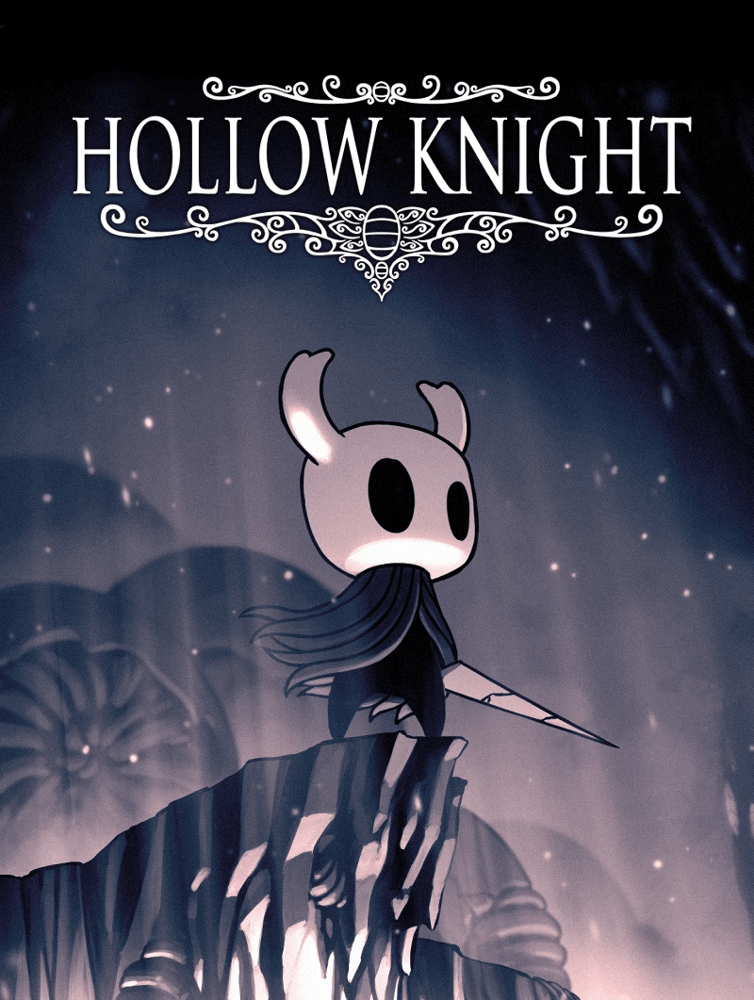
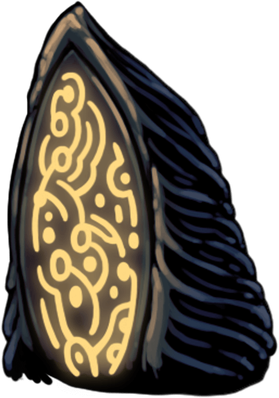

游戏介绍 —— 空洞骑士
《空洞骑士》（Hollow Knight）是独立团队 Team Cherry 开发的一款 2D 类银河恶魔城动作冒险游戏。在 2017 年 2 月 24 日发布了 Windows 版，随后陆续登陆 macOS、Linux、Nintendo Switch、Xbox One 和 PlayStation 4 平台。
游戏的部分开发资金通过在 Kickstarter 众筹获得，共筹得 57,138 澳元。之后的两年内，Team Cherry 持续更新并追加了四个免费内容包（隐藏的梦、格林剧团、生命血、寻神者）。部分未实现的众筹奖励与目标将在游戏的续作《空洞骑士：丝之歌》中实装。

剧情故事
在游戏剧情中玩家扮演一名沉默的小骑士，在一个庞大却废弃的、属于昆虫与英雄的圣巢王国中冒险，逐渐揭开王国衰败的真相，化解虫族的致命危机。
游戏初始，小骑士只有一根旧骨钉，以及凝聚灵魂恢复生命的能力。在探索过程中，小骑士逐渐获得更多技能与护符物品，帮助它在幽深复杂的地下王国中走得更远。
圣巢深处埋藏着古老的秘密，更多的游戏内容等待着各位读者亲自进入游戏慢慢体会与探寻……
